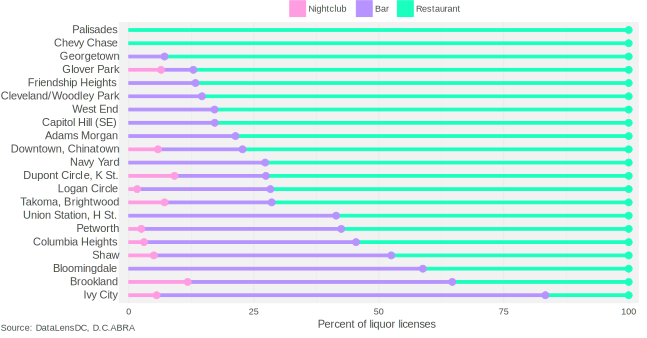

D.C.’s nightlife boom since 2008 has increased the number of liquor licenses for bars, restaurants, and nightclubs by nearly 50 percent. But it hasn’t been an even gain across each category. From 2008 to 2016, the number of liquor licenses for bars increased 77 percent, and restaurants grew 37 percent—but the number of nightclubs actually fell by 8 percent. This brought the overall proportion of D.C. nightlife to 25 percent bars, 71 percent restaurants, and 4 percent nightclubs.
Each liquor license type has different restrictions, and is meant to provide a different experience for customers. Restaurants must have a kitchen that stays open until two hours before closing, gross food sales in excess of $2,000 per occupant or 45 percent of gross annual receipts, and are not allowed to have dancing or covers; entertainment is allowed only with additional approval. Bars—or taverns as D.C.’s Alcoholic Beverage Regulation Administration (ABRA) refers to them—do not have to serve food and can have a dance floor as long as it’s under 140 square feet. Nightclubs face few restrictions; they may charge cover and have entertainment and dancing without first receiving additional permits.
The mix of restaurants, bars, and nightclubs vary drastically across neighborhoods in D.C., as shown below.
Restaurants play biggest nightlife role in older neighborhoods, smaller role in new nightlife 'hubs'
Proportions of bars, restaurants, and clubs in neighborhood clusters

Generally, neighborhoods that have older, wealthier, and whiter residents have the greatest proportion of restaurants to overall nightlife. This is most pronounced in Chevy Chase and Palisades, where there are only restaurants. Younger nightlife “hubs,” such as Ivy City, Brookland, and Bloomingdale, that are located in gentrifying communities tend to have fewer restaurants and more bars.
These nightlife mixes across neighborhoods are not entirely driven by the market. Many neighborhoods, such as Dupont, Adams Morgan, Georgetown and Glover Park, restrict or limit certain types of establishments. Many of these moratoriums have been in place for over 15 years, but recently public opinion has shifted against them. In 2013, for instance, a proposal for a moratorium around 14th and U Street NW was unanimously rejected by the Alcoholic Beverage Control Board, which was persuaded by residents’ objections. Elsewhere, existing moratoriums have been relaxed to encourage the growth of restaurants. West Dupont relaxed their moratorium by allowing liquor licenses for restaurants in 2011, followed by East Dupont in 2013, Adams Morgan in 2014, and Georgetown and Glover Park in 2016. In 2016 West Dupont further relaxed restrictions by allowing new liquor licenses for bars.
If Georgetown and Glover Park are anticipating their own restaurant booms after relaxing the moratorium, however, similar moves elsewhere suggest it may not come. You can see this in the chart below, which shows the number of restaurants before and after relaxed moratoriums for West Dupont, East Dupont, and Adams Morgan.
Recent liquor license moratoriums produce modest, if any, short-term restaurant growth
Number of restaurants in moratorim zones before and after relaxations
While West Dupont experiences a notable increase in restaurant in the three years following the removal of a restaurant liquor license cap, the response to relaxing moratoriums overall is tepid. In the years since these moratoriums were put in place nightlife has grown elsewhere. So while moratorium lifts in these neighborhoods may bring a modest increase in restaurants or bars, it is unlikely to move these neighborhoods back to the nightlife dominance they once had.
Technical notes: Data was obtained from the Alcoholic Beverage Regulation Administration via FOIA. Years shown above refer to specific reporting months: December 2008, December 2009, November 2010, October 2011, December 2012, August 2013, August 2014, July 2015, and August 2016. Neighborhoods are defined by D.C. Office of Planning's Neighborhood Clusters. You can find complete code and data for this post on my github page.